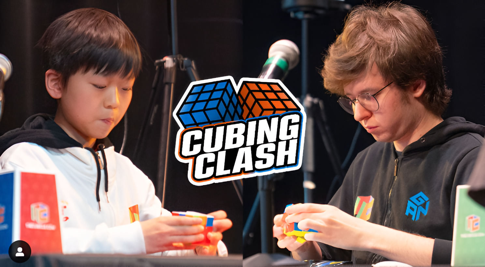

Cube Store
El mundo del SpeedCubing
Publicado el: 22/05/2025
Más allá de un juego de colores: El speedcubing es la práctica de resolver el cubo de Rubik —y otros rompecabezas similares— en el menor tiempo posible. Aunque para muchos pueda parecer un simple pasatiempo, esta disciplina ha evolucionado en las últimas décadas hasta convertirse en una actividad con características de deporte mental, con competiciones internacionales, récords mundiales y comunidades apasionadas alrededor del mundo.
Orígenes del speedcubing El cubo de Rubik fue inventado en 1974 por el arquitecto húngaro Ernő Rubik como una herramienta didáctica para enseñar conceptos tridimensionales. Lo que comenzó como un objeto pedagógico se transformó rápidamente en un fenómeno cultural global en los años 80. Sin embargo, no fue hasta finales de los 90 e inicios del siglo XXI que surgió el speedcubing como lo conocemos hoy. El renacimiento del interés por el cubo trajo consigo una nueva generación de entusiastas que no solo buscaban resolverlo, sino hacerlo en el menor tiempo posible.
La técnica detrás de la velocidad El speedcubing combina memoria, lógica, habilidad motriz y una gran capacidad de concentración. Los cuberos (como se les conoce) utilizan algoritmos previamente memorizados para resolver cada una de las etapas del cubo. Uno de los métodos más populares es el CFOP (Cruz, F2L, OLL, PLL), que permite reducir los movimientos necesarios para resolver el cubo. Además, el desarrollo de cubos de alta calidad, con mecanismos internos diseñados para permitir giros más suaves y rápidos ha sido esencial en la evolución del speedcubing. Estas mejoras técnicas, combinadas con la práctica intensiva y la estrategia, han llevado a reducir los tiempos de resolución a apenas unos pocos segundos. El récord mundial actual del cubo 3x3 esta por debajo de los 4 segundos, un tiempo impresionante.

La comunidad y las competencias Uno de los aspectos más importantes del speedcubing es su comunidad internacional. La World Cube Association organiza competencias, establece reglas y valida récords. Estas competencias permiten mostrar habilidades, conocer personas y aprender. Es una actividad inclusiva, donde participan personas de todas las edades, y existen diferentes categorías, como resolver con una mano o con los ojos vendados.
Más que un juego: Detrás de la velocidad y la precisión, el speedcubing ofrece beneficios significativos. Estimula el pensamiento lógico, mejora la memoria muscular, desarrolla la paciencia y fomenta la perseverancia. También se ha convertido en una herramienta educativa útil para enseñar matemáticas, resolución de problemas y habilidades espaciales.
Conclusión: El speedcubing es mucho más que resolver un cubo de colores. Es una manifestación del ingenio humano, una comunidad vibrante y una práctica que combina destreza física y mental. En un mundo donde la velocidad y la eficiencia son cada vez más valoradas, el speedcubing representa un ejemplo fascinante de cómo el juego puede transformarse en arte, ciencia y deporte al mismo tiempo.
Síguenos en nuestras redes sociales: